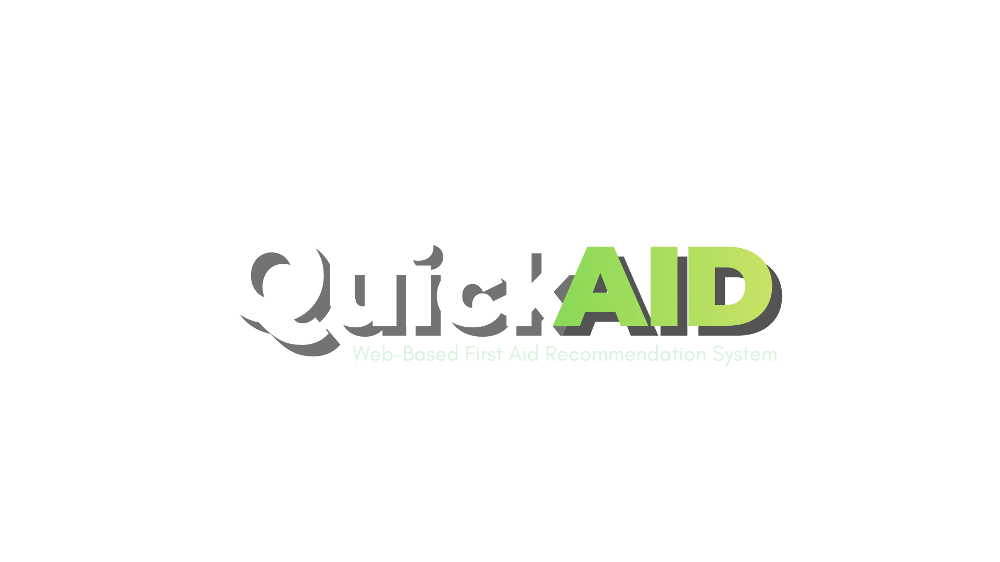

QuickAid is a web based first aid recommendation system designed to guide users in responding to minor wounds. Instead of searching through multiple websites, QuickAid organizes basic first aid guidance into one structured interface.
QuickAid was developed as an educational prototype system that organizes first aid information for minor wounds into a simple interactive website. The system aims to demonstrate how web technology can assist users in understanding appropriate first aid responses while emphasizing safety awareness.
The first aid recommendations presented in QuickAid are based on general educational resources discussing basic wound care, minor injury response, and introductory first aid guidance. These sources helped structure the system's recommendations.